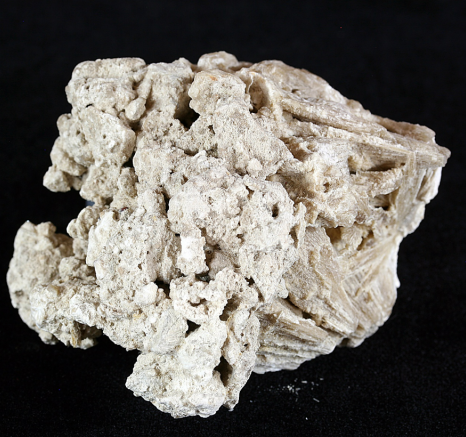

La momificación
La práctica de momificar a los muertos comenzó en Egipto en torno al 3500 a.C. La palabra momia viene del latín mumia, que a su vez deriva de la palabra persa mum, que significa "cera", por el aspecto ceroso del cadáver embalsamado. La idea de momificar a los muertos puede que provenga de la buena conservación de los cadáveres en la árida arena del país.
Origen de momificación
Las creencias en la vida de ultratumba fueron partes muy importantes de la vida egipcia. Para la felicidad del espíritu, los egipcios atribuían valor a la conservación del cuerpo o su imagen, de ahí la necesidad de preservar el cadáver mediante el embalsamamiento, difícil proceso que cumplían, por su costo, únicamente las personas acaudaladas.
Proceso de momificación
Cuando la persona fallecía su familia la llevaba con los embalsamadores, los cuáles ofrecían tres tipos de servicios dependiendo la posición económica de la familia.
El servicio utilizado por los faraones y sus familiares era el más caro, el cuerpo se tendía sobre una mesa y se lavaba, el cerebro se sacaba por las fosas nasales con un gancho de hierro y lo que no se lograba sacar con el gancho se lavaba con químicos.
Después se realizaba un corte en el costado del tórax y se extraía el contenido del abdomen. La cavidad se limpiaba a fondo y se lavaba con vino de palma y después con una infusión de especias molidas. Una vez limpia, se rellenaba con sustancias aromáticas y se volvía a coser.
Por último, el cuerpo se cubría con natrón y se lavaba para ser envuelto de la cabeza a los pies con tiras de lino.

Vasos canopos
Recipientes empleados para depositar las vísceras de los difuntos, lavados y embalsamados, para mantener a salvo la imagen unitaria del cuerpo. Estos vasos se introducían en una caja de madera, que durante el cortejo fúnebre era transportada en un trineo.
Natrón
El natrón es un agente natural deshidratador que al igual que la arena sirve para secar el cuerpo. Además de secarlo lo deja flexible.
